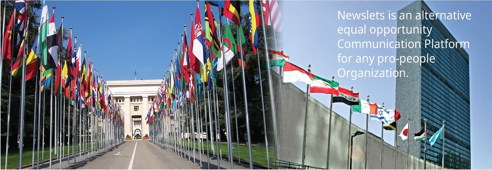
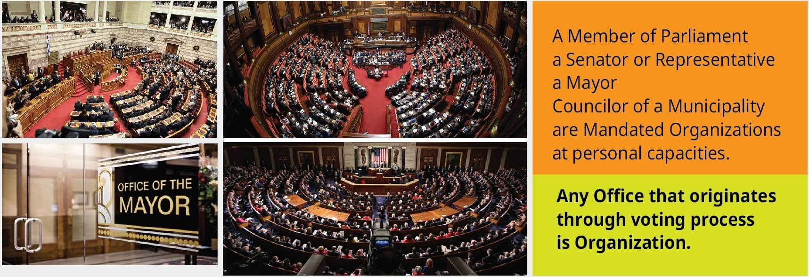
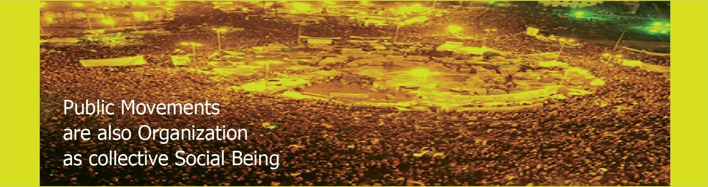

Organizations basically are infrastructure for the benefits of the people. Organizations that are mandated by social objective to serve a constituency.
Newslets wants to facilitate communication between Service Providers and its core beneficiaries, constituencies, people in general. Newslets as a communication medium will work better where democratic values are cardinal in developing mutual respects, trust, co-operation. Newslets can be a tool for achieving and maintaining democracy. Newslets can be a tool for upkeep of Human Rights.
Organizations should consider communication through Newslets as Public Service Announcements. Written within 99/150/ 200 or 1000 words added with a relevant visual. A PSA can be treated as concise News item. Information can be segmented and released in sequences for better highlights facilitating easy understanding.
Any not-for-profit entity ( development NGOs of any sizes, Relief & rehabilitations outfits, Charity organizers, Faith-based Insti-tutions etc. ) that was created to exist for the benefits of its core constituency is qualified for an Organization.
A Member of Parliament, a Senator or Representative, a Mayor, Councilor of a Municipality are mandated Organizations at personal capacities. Any Office that originates through voting process is Organization.
UN and its organs, EU, AU, COMESA, SARC, SADC, all regional bodies represented by Governments or its Organs which has specific constituencies of its own are Organizations. UN organs in each country can develop location-specific-agenda and serve overall mandate of the UN system.
Government Ministries can individually spear communication with its own constituency serving own agenda (local agenda of the Govt). All Embassies under a Foreign Ministry are mandated individual organizations serving location specific-agenda of the Governments.
Newslets will facilitate organizations to do "well done communication".
Serving people is well done if communication is well done.